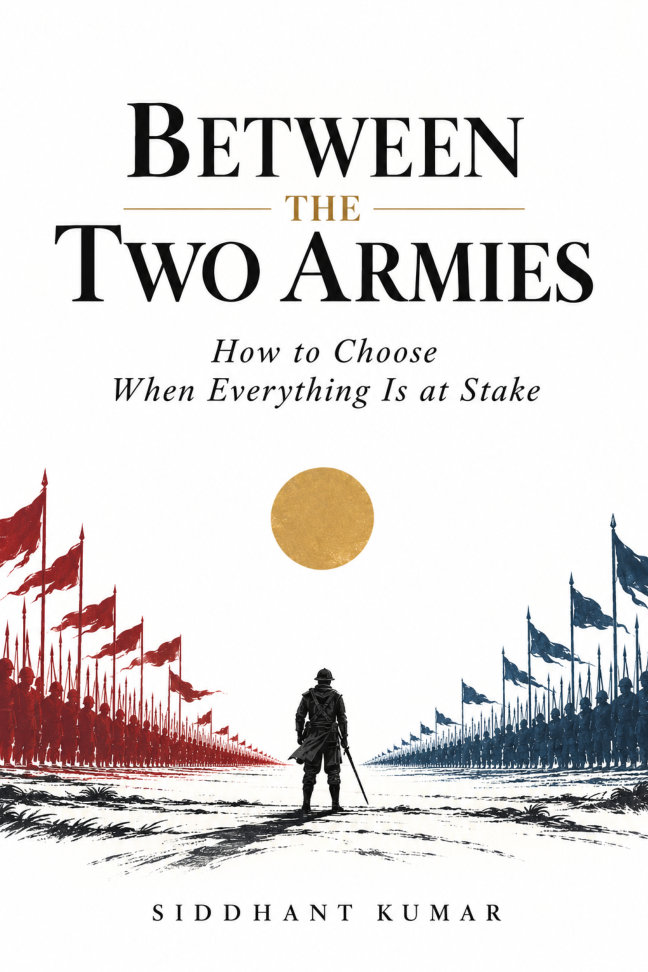

See the field clearly.
The Gita, ethical dilemmas and the psychology of fear become ways to ask what is happening inside us when a decision cannot wait.
How to Choose When Everything Is at Stake
When duty and love pull in different directions, when loyalty meets justice, when both sides hold something worth protecting—how do you choose?

A warrior stands between two armies, his bow slipping from his hand. The battle is about to begin. He cannot move.
Between the Two Armies begins with Arjuna at Kurukshetra, then follows the problem of choosing through India’s epics, military history, other civilisations and the psychology of life under pressure.
These are not always contests between an obvious right and an obvious wrong. Duty can collide with love. Loyalty can collide with justice. A personal dream can collide with the needs of people who depend on you.
Across 26 chapters, Siddhant Kumar brings stories, arguments and questions to the moment when knowing what is right may still be harder than it sounds—and acting on it harder still. The aim is to help the reader examine a choice, take responsibility for it and live with what follows.
“When you stand between two armies, afraid, under pressure, and unsure what is right, how do you choose well, act well, and live with what you have chosen?”The question at the heart of the book
The manuscript returns to Krishna’s invitation to reflect fully and then choose. Its stories and arguments ask for examination, and its closing questions leave room for the reader to disagree.
The Gita, ethical dilemmas and the psychology of fear become ways to ask what is happening inside us when a decision cannot wait.
Chanakya, Machiavelli, Sun Tzu and histories of leadership raise questions about strategy, conscience and the right to be followed.
Friendship, discipline, ambition, failure and hope bring the argument back to everyday life and the person our repeated choices make.
The chapters are designed to be read in order, with later ideas building on earlier ones. Most chapters end with questions for reflection and discussion.
Where is the real battle fought, how do we know what is right, and why is knowing it not enough to do it?
Fear, attention, status and desire: understanding the forces that shape a decision before we make it.
What is power for, and how does a leader earn the right to be followed?
What do a nation and its people owe each other, and can a good result ever excuse a terrible deed?
When must we fight, for whom, and at what cost?
The crowd, the friend and the silent witness: who stands beside us, and whom must we stand beside?
How do we keep going when we fall, and what should we build with the one life we have?
Selected passages from the supplied manuscript.
Both armies held something worth protecting. That is the kind of moment this book is mostly about: loyalty against justice, a friend against the truth, your family against strangers who also need you, your own dream against the people who depend on you.
Everything in these pages is an argument, a story or a question. You are free to accept it, reject it, or argue with it. Your mind is yours. Your life is yours. Your choices are yours.
Brief excerpts reproduced from the author’s manuscript. © 2026 Siddhant Kumar.
For the soldiers who went into the array knowing they did not know the way out.
And for every young person standing between two armies, wondering which way to walk.
Written for readers from about twelve years old to adults: students, teachers, parents and anyone thinking about courage, conscience, leadership or a difficult decision. Stories of war, prisons and loss are told plainly; younger readers may find it useful to discuss them with a parent or teacher.
Bring a pencil. Pause at the questions. Let the stories become a conversation about the choices in your own life.
An author, developer and researcher from New Delhi, India.
Siddhant’s writing returns to service, courage, responsibility and the lives behind the events we remember. His first book, Guardians in the Gale, is a collection of poetry honouring the Indian Armed Forces.
In this manuscript, he brings stories from epics and history into conversation with the pressures of ordinary life, asking how we can choose and act with greater care.
The Gita supplies the book’s central image and a recurring question. The book also draws on the Mahabharata, the Ramayana, military history, Greek and Roman stories, other traditions and modern psychology.
The book makes arguments and gathers its answers in the final chapter, but asks readers to test them against evidence and people they trust. Its purpose is thoughtful judgment and personal responsibility.
The author recommends reading the chapters in order because later ideas build on earlier ones. Individual chapters begin with stories and can also serve as starting points for discussion.
The manuscript names a readership from about twelve years old to adults. Some chapters discuss wars, massacres, imprisonment and death without graphic detail; conversation with a parent or teacher may help younger readers.
The supplied manuscript is marked “Draft manuscript · October 2026.” No purchase link or release date is listed here. Ask the author about availability at sid@siddhantkumar.in.
For book availability, readings, school visits or a thought you would like to share.
sid@siddhantkumar.in